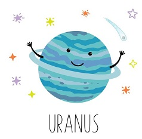
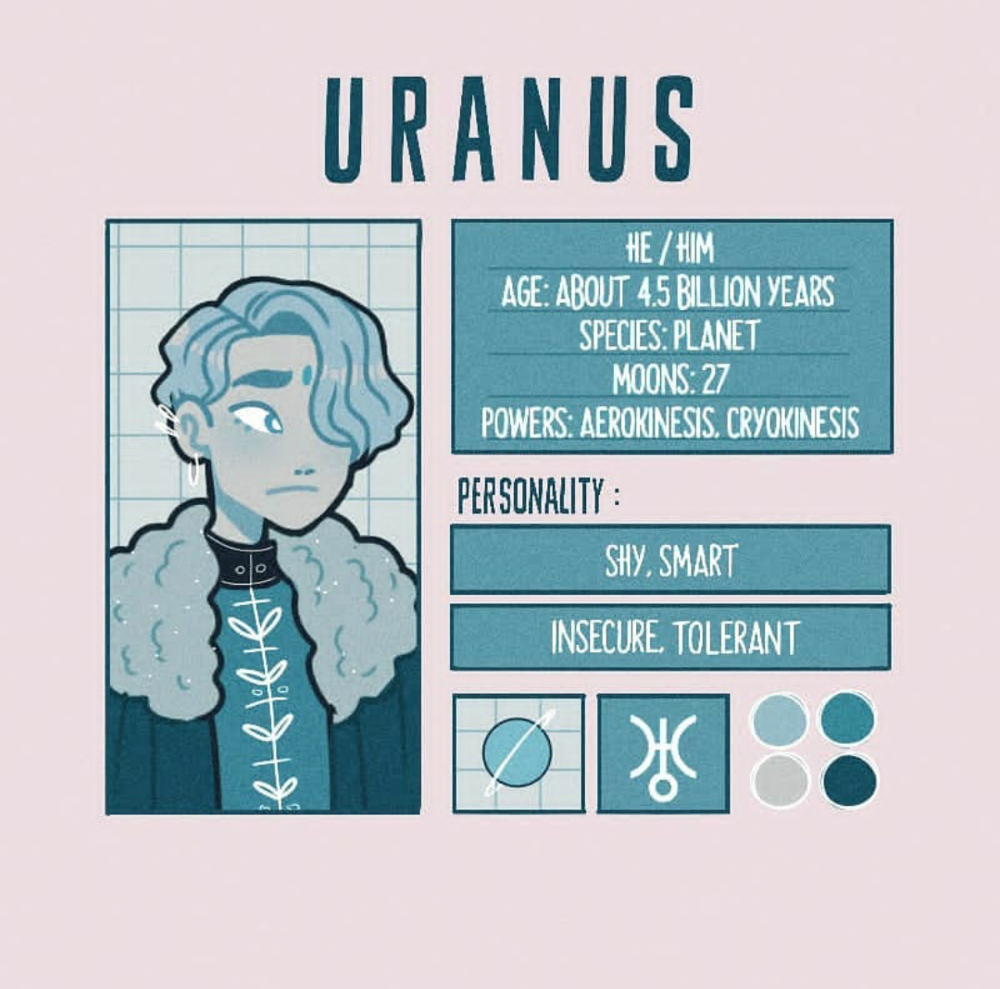

Доброго времени суток, господа Уран!
Я Уран, самая холодная планета, седьмая по счёту от Солнца и третья по размеру после Юпитера и Сатурна планета Солнечной системы. Я обладаю уникальной особенностью: я наклонен к своей орбите почти под прямым углом и вращаюсь, словно лежа на боку.
В 1977 г. американские астрономы Элиот и Данем случайно обнаружили, что я имеют тонкие, почти прозрачные кольца. На сегодняшний день известно о 13 кольцах, одно из которых имеет красный цвет, еще одно - синий. Кольца состоят из очень мелких частиц размером от нескольких микрон до 1 м.
Я получают очень мало энергии от Солнца и почти не излучаю собственного внутреннего тепла. Температура моей атмосферы составляет всего - 224 , и это делает меня самой холодной планетой Солнечной системы.
Я был открыт в 18 в. и получил название "Звезда Георга" в честь британского короля Георга III. Позднее меня переименовали в честь божества неба Урана. Кстати, только у меня имя греческого, а не римского бога.
На сегодняшний день известно 27 моих спутников: 5 крупных, остальные значительно меньше. Названия спутникам даются в честь персонажей произведения У. Шекспира и А. Поупа.
Мой год равен 84 земным годам, а один оборот вокруг своей оси я совершаю за 17 часов и 14 минут. Но из-за большого наклона к моей орбите смена дня и ночи на моих полюсах происходит один раз в половину уранианского года, то есть каждые 42 земных года.
Я являюсь газовым гигантом, поскольку моя оболочка состоит из газов водорода и гелия. Под ней находится мантии, состоящая из воды, аммиака и метана. Хотя эта смесь является очень горячей и плотной жидкостью, ее принято называть "льдами", благодаря чему я считаюсь "ледяным гигантом".
Уран
- Пол: Мужской
- Возраст: 4.5 биллионов лет
- Спутник: Есть (27 шт.)
- Способности: Аэрокинез(манипуляция ветром и воздухом), криокинез(способность замораживать)
- Качества: Толерантный, стеснительный, умный, нерешительный
- Любимые цвета: Холодные оттенки
